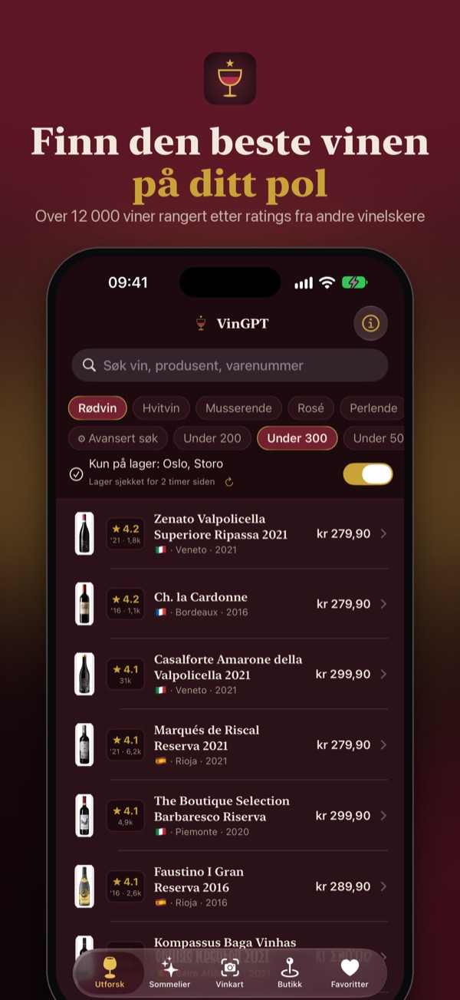
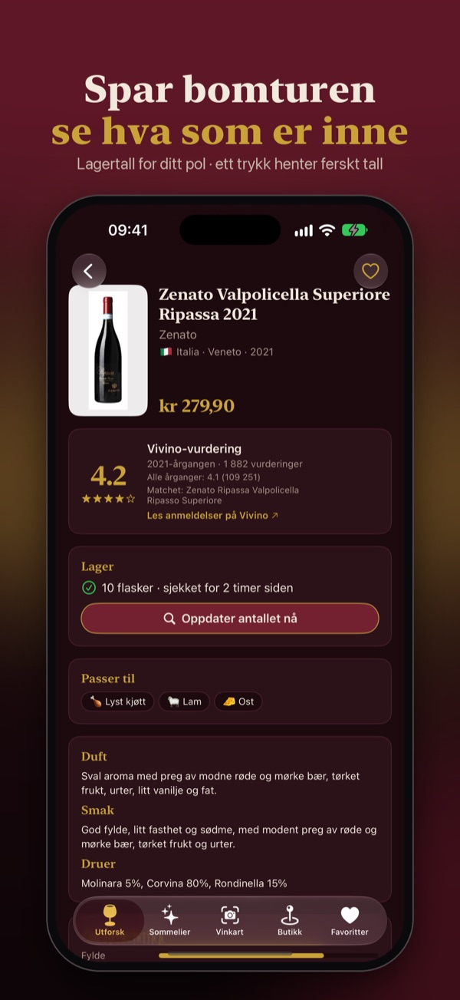
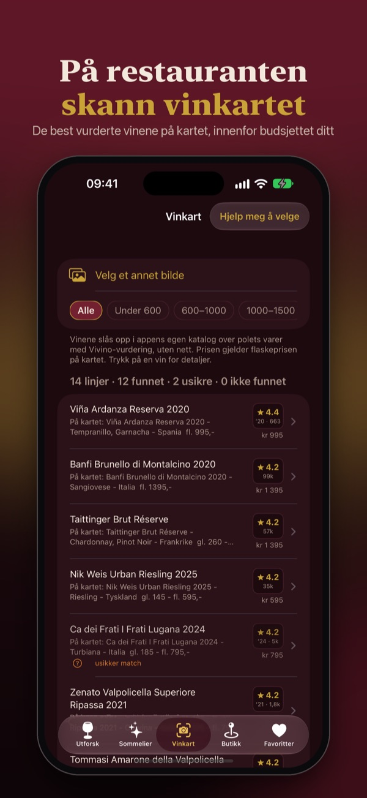

VinGPT
Finn den beste vinen på ditt pol
Velg din Vinmonopol-butikk og se alt den har på lager, rangert etter vurderinger fra tusenvis av andre vinelskere. Sjekk flasketallet live før du drar. På restauranten: ta bilde av vinkartet og se de beste vinene på det.
Last ned gratis i App StoreiPhone med iOS 17 eller nyere · ingen konto · ingen reklame



- Hele beholdningen, rangert. Filtrer på pris, vintype og hva maten er.
- Sjekk hylla live. Flasketall hentes fra Vinmonopolet når du trykker. Utsolgt? Appen viser nærmeste butikk som har den.
- Skann vinkartet. Bildet leses på telefonen og rangeres innenfor prisen du vil betale.
- Spør sommelieren. «Hva passer til lam under 300?» — svar fra det din butikk har inne (krever Apple Intelligence).
Støtte og vanlige spørsmål
Hvorfor viser appen en annen beholdning enn butikken har?
Lagerlisten («hvilke varer fører butikken») caches i inntil ett døgn og merkes med når den sist ble sjekket. Flasketall hentes derimot alltid live når du trykker «Sjekk lager» på en vin. Dra ned i listen for å oppdatere hele lagerlisten.
Hvorfor mangler en vin vurdering?
Vurderinger finnes for de mest omsatte vinene i butikkutvalget. Viner i bestillingsutvalget og helt ferske årganger kan mangle — appen viser da «Ingen vurdering funnet» i stedet for å gjette.
Sommelieren svarte rart eller feil
AI-sommelieren kjører på Apples språkmodell på telefonen (krever iPhone 15 Pro eller nyere med Apple Intelligence). Den kan kun anbefale varer som faktisk finnes i sortimentet, og begrunnelsene ved hver vin kommer fra Vinmonopolets egne beskrivelser. Blir et svar likevel feil, bruk «Send tilbakemelding» under ⓘ i appen — det hjelper oss mye.
Krever appen konto?
Nei. Ingen innlogging, ingen registrering. Favoritter følger din egen iCloud automatisk.
Utgiver
VinGPT utgis av Siphon AS (org.nr. 998 610 672), Jacob Aalls gate 14A, 0368 Oslo.
Kontakt
Tilbakemeldinger og feilrapporter:
support.vingpt@vingpt.no
(eller bruk «Send tilbakemelding» i appen — da følger versjon og katalogdato
med automatisk).